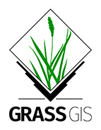

Temporal GIS
for Drone Data
Brendan Harmon
Temporal Framework for GIS
- Database for time series of spatial data
- Temporal datasets, processing, visualization, and conversion
- Implemented in GRASS GIS

Space Time Datasets
- A collection of maps representing spatial data at different instances in time
- Maps are assigned timestamps and registered in a database with temporal metadata
- Support for vector, raster, 3D vector, & 3D raster maps
Temporal Processing
- Gap filling
- Aggregation
- Accumulation
- Algebra
- Queries
- Statistics
- Animation
- etc…
Case Study
Hilltop Arboretum Time Series
Hilltop Arboretum
Cajun Prairie Wildflower Meadow
Monthly Drone Surveys
Time Series Analysis
Spatiotemporal Data & Functions
- Space time raster dataset
- Temporal aggregation
- Temporal algebra
Monthly Changes in Biomass
Point Cloud Visualization
Net Annual Biomass
References
- Gebbert, S. & Pebesma, E. 2014. TGRASS: A temporal GIS for field based environmental modeling. Environmental Modelling & Software 53, 1-12
- Gebbert, S. & Pebesma, E. 2017. The GRASS GIS temporal framework. International Journal of Geographical Information Science 31, 1273-1292
- Gebbert, S., Leppelt, T., & Pebesma, E., 2019. A topology based spatio-temporal map algebra for big data analysis. Data 4, 86.
Tutorials
- GRASS GIS Manual, Temporal data processing in GRASS GIS
- NCSU Geo For All Lab, Spatio-temporal data handling and visualization in GRASS GIS
- NCSU Geo For All Lab, Brief introduction to GRASS GIS Temporal Framework
- Martin Landa, Jena GRASS GIS Workshop